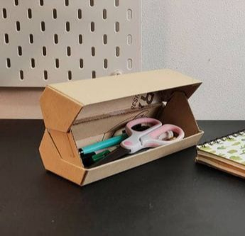
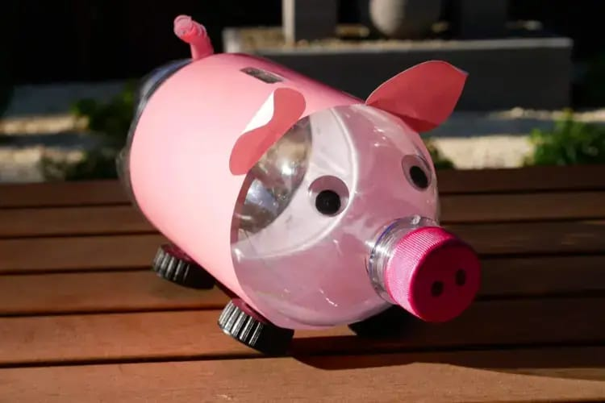

PROJECT
PROJECT
Lampu Hias dari Keyboard
Menjelajahi ide kreatif dalam mengubah sampah menjadi karya bernilai.
Ide sederhana, dampak nyata. Kenali karya yang lahir dari kreativitas dan kepedulian terhadap lingkungan.
PROJECT
Menjelajahi ide kreatif dalam mengubah sampah menjadi karya bernilai.
 E-WASTE
E-WASTE
membut barang bekas menjadi barang baru.

TEKSTILMengubah barang bekas menjadi barang yang berguna.
 PLASTIK GUNA ULANG
PLASTIK GUNA ULANG
Mengubah sendok bekas menjadi barang indah.

E-WASTEMemanfaatkan limbah plastik menjadi barang bermanfaat.
 E-WASTE
E-WASTE
Memanfaatkan limbah plastik menjadi lebih indah